UnchartedX
The 1100 ton Unfinished Obelisk - Carved with Pounding Stones? Scoop Marks at Aswan Quarry!
Ben · 65 min · watch on YouTube · summarised 2026-09-28
The argument is about the shape of a mark rather than the size of the object. The accepted explanation for the scoop marks at Aswan is that men bashed the granite with dolerite balls. Ben's case is that the marks do not look like that — not because the work would have been slow, though he spends twenty minutes on that too, but because the geometry is wrong.
He quotes Reginald Engelbach at length throughout, and lets the accepted explanation be stated by the man who formed it.
The site, and what is still in it
The rose granite quarry is about 1.2 km east of the present Nile in southern Aswan, one of several in the region that supplied the red, black and rose granite used across Egyptian sites 05:09–05:32. The bedrock is everywhere; even Elephantine Island was quarried 05:39–05:48.
What is left in the trench is an obelisk that, had it been freed, would have weighed 1,168 metric tonnes at 41.7 m long — figures still derived from Engelbach's 1922 measurements 08:27–08:39.
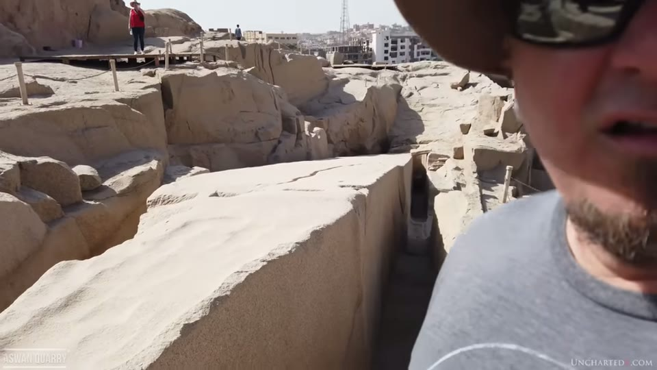
The obelisk is still attached to the bedrock in an angled trench in the middle of a granite quarry.
The quarry is much older than its most famous object. One of the earliest known quarry masters, Hori, administered it under Ramesses III around 1180 BC, deep into the New Kingdom, and Aswan granite appears in Old Kingdom monuments at least 1,500 years earlier — the single-piece box under mastaba 17 at Maidum, the 70-tonne blocks of the Valley Temple at Giza, the granite casing of the second and third pyramids, and material from Abu Rawash down to Maidum 05:50–07:32. Ben notes that the obelisk was not necessarily the last thing quarried here, and that thousands of years of work may have followed it 09:27–09:39.
Engelbach found the obelisk under more than 7 m of debris, with hundreds of large granite blocks thrown down onto it from a quarry above — blocks his workmen had to cut into halves and quarters before they could be moved 09:41–10:41.
The accepted explanation, stated
Visitors are required to watch a 15-minute film before entering, which Ben calls "indoctrination" — it is the only site in Egypt in his experience that requires this 10:43–11:29. The film's account is dolerite pounding stones.
The logic behind it is Engelbach's, and Ben quotes the passage where it is formed 17:55–18:53:
"There are no traces of chisel work in the trench at all and not a trace of any copper implement was found during the clearance of the obelisk. We are therefore forced to the conclusion that the large balls of tough greenish-black stone found in such profusion round the obelisk and all quarry work at Aswan must have been the tools employed."
Ben's objection to the reasoning is that it is an argument from absence: dolerite pounders were found here, therefore pounders made the marks — the same move, he says, that produces the copper chisel as the explanation for precision granite work 19:04–19:29.
The same quotation supplies the description everyone now uses. Engelbach found the trench "of most peculiar form… a series of parallel and equidistant vertical cuts as if it had been made by a gigantic cheese scoop", averaging 75 cm wide and about two-thirds the depth needed to free an obelisk of square section, with no corners anywhere — everything rounded 17:55–18:20.
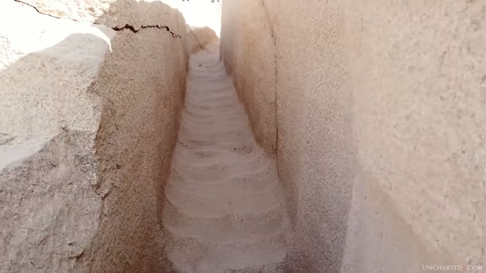
The narrow trenches are scooped on both walls and down the spine between them.
How slow it would have been
Three attempts have been made to measure how fast granite comes away under a dolerite ball, and Ben runs through all three 29:47–36:31. The scoop marks themselves are taken up again in the vase scan update entry, where a metrologist proposes the measurement that would test them — scanning one scoop whole to see whether the centre of its rotation moves along it. He returns to the same three figures in the logistics entry, where the argument shifts from the rate of cutting to the problem of lifting the obelisk out of its trench at all.
Engelbach, in the 1920s, pounded for an hour "at various times" on a patch and reduced the level by about 5 mm. He then wrote: "Let us assume that the ancients could extract 8 mm per hour from a similar area" 30:14–30:39.
Mark Lehner and Roger Hopkins, for the NOVA obelisk documentary, worked a trench 26 inches wide at its widest with 12-lb pounders; after seven days Hopkins had made very little headway and proposed moving to modern tools 22:05–23:08. Ben notes the same pair had to resort to steel tools and heavy machinery on NOVA's This Old Pyramid.
Denys Stocks measured his by volume removed.
Chris Dunn converted all three to a removal rate over a 12-inch square of granite, and these are the figures Ben builds on 32:54–33:20:
| cubic centimetres removed per hour | |
|---|---|
| Engelbach | 464.51 |
| Lehner and Hopkins | 74.32 |
| Denys Stocks | ~30 |
Thirty cubic centimetres is about three-quarters of a golf ball. Ben's image for the scale of the task is to picture the obelisk trench filled to the brim with golf balls and add 25% — that being the hours of continuous pounding, for trenches that are only two-thirds as deep as they need to be 33:33–33:56.
The human account he quotes is NOVA producer Peter Tyson's, via Dunn 24:11–25:08: ten minutes before the wrists hurt, twenty minutes for "a baby's palmful of granite dust", with the granite surface looking no different; and Lehner, after several hours, barely able to type.
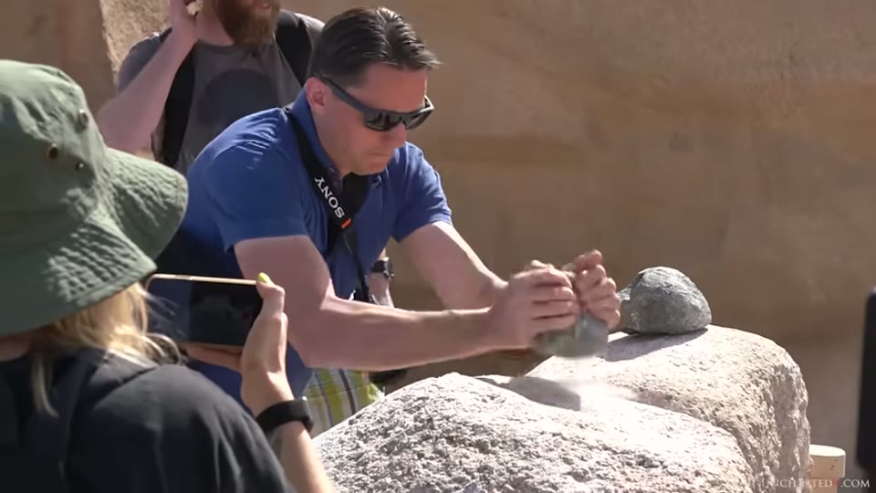
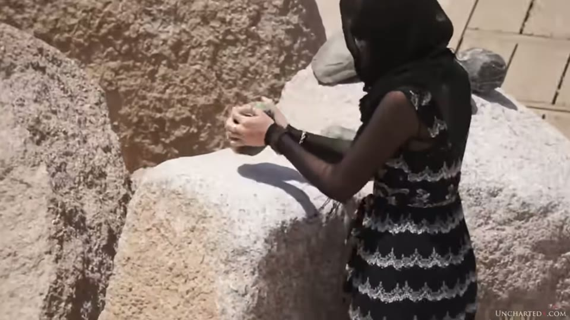
What the accepted explanation asks a worker to do, and the size of the tool it asks them to do it with.
The point Ben draws from the three figures is not that the rate is low but that the rates disagree with each other — Engelbach's is fifteen times Stocks' — and that Engelbach then credited the ancient Egyptians with 63% more than he had managed himself, making their assumed rate twenty-five times Stocks' 35:48–36:31.
He also deals with fire-setting rather than ignoring it: there is evidence fire was used in places, he says, but he doubts it is faster once you count gathering fuel, heating bedrock, and clearing ash and mud, and he calls it an open question that needs testing 36:33–37:37.
The pounders themselves
The dolerite balls are river-worn and unshaped, so they were brought to the site from elsewhere 37:39–37:49. Hundreds were found.
Two observations from Engelbach do most of the work here 38:01–38:33:
"In very many cases, the pounder had been broken by the great force of the blows delivered with it. I cannot believe that a man using one of these by hand could break it, as the only way I succeeded in doing so was by hurling one down from a height of about 30 ft onto a pile of others, and then only after repeated attempts."
"It has long been known that the face of the granite was dressed by means of these pounders, but I have not heard of their use being suggested for excavating a trench in it."
Ben adds that most of the pounders Engelbach found were split or broken, which is not what a visitor sees today because the quarry displays the intact ones 38:34–38:43. The alternative use he reports for them — not his own proposal — is as bearings placed under a block once it was freed, to lever and shift it, which would break them in the way found 39:07–39:38.
The part that is his own: the geometry
Ben presents this section as his own contribution 39:38–44:50, and it does not depend on any rate.
Take the pounding method at face value and follow it through. You make a depression, which leaves ridges either side. Next shift, to go deeper, you knock the ridges down — the dressing technique Engelbach describes. Then you make new depressions, and new ridges, and so on.
Nothing in that process requires the depressions to stay in the same place. As you work down, the centre of each scoop should wander left and right, because you would attack whatever part of the granite was weakest within the work area. Ben argues it would in fact be less efficient to keep returning to the same spot, given how slowly the material comes away.
What the quarry walls show instead:
- The scoops run down in straight vertical lines, traceable on the walls of the trenches.
- A small vertical ridge is left between each scoop, defining one channel from the next, so the progression downward can be followed.
- There are horizontal striations running across each vertical channel, as if whatever made the marks was withdrawn or reset.
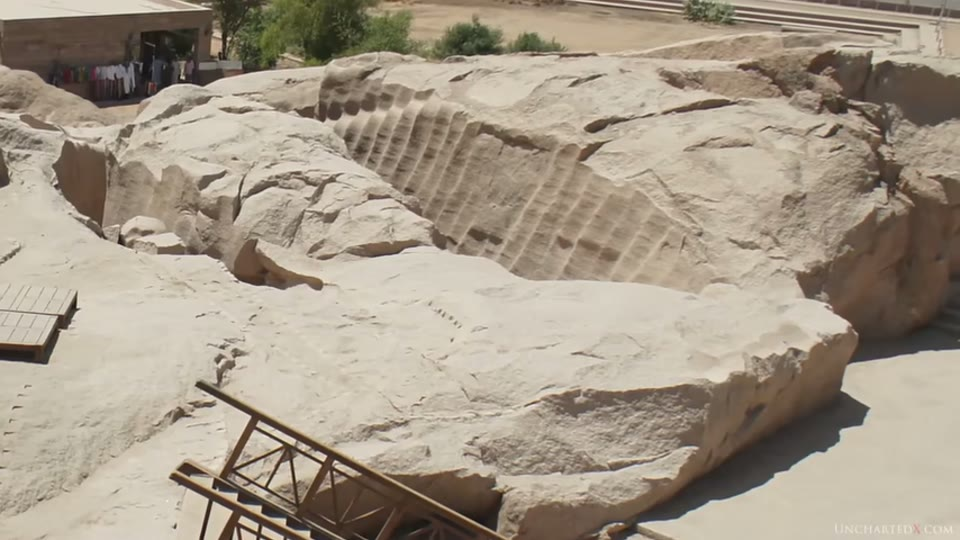
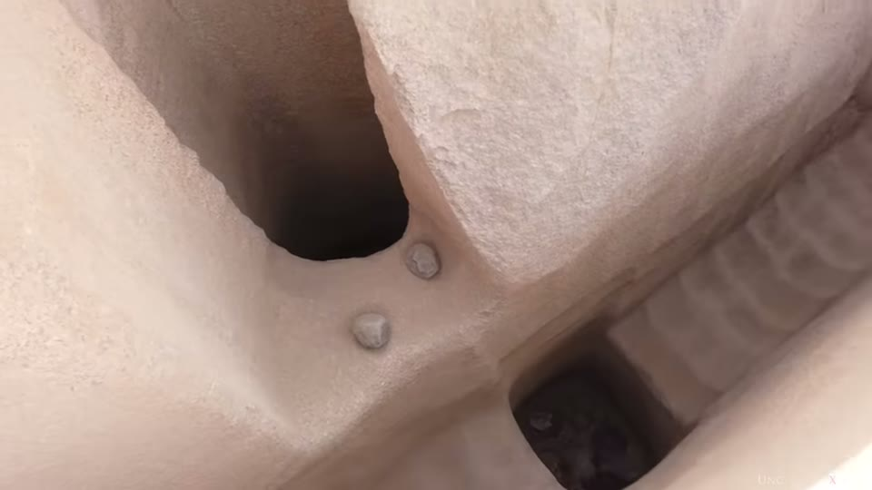
The scoops run down in straight vertical lines with a ridge left between each one, which manual pounding does not require.
- At the bottom of completed trenches — where a spine of stone survives between two scooped faces — the scoops are still scoops, not a flat floor. Since pounders are, on Engelbach's own account, a tool for flattening, a flat bottom is what the method predicts; and scooping below the ridge line removes more granite than the job requires, at hours per golf ball 43:26–44:51.

At the bottom of a finished trench the surface is scooped, not flat - the opposite of what a flattening tool predicts.
- In several places the scoops continue onto the ceilings of undercuts 28:09–28:45. Ben's question is direct: how do you pound granite upward, with no room for a stroke and no gravity to help?
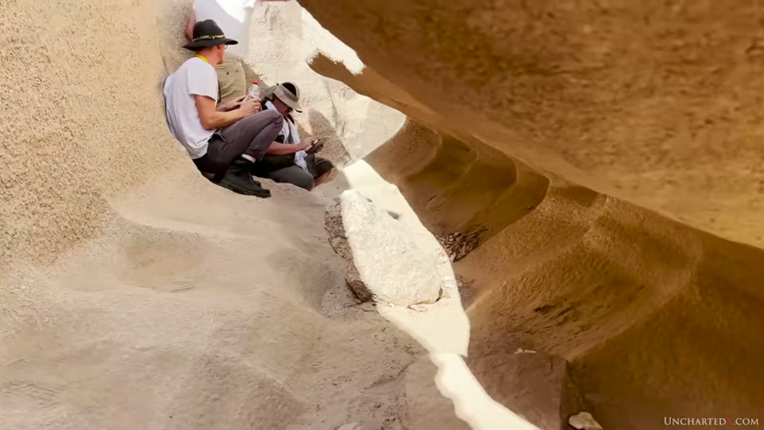
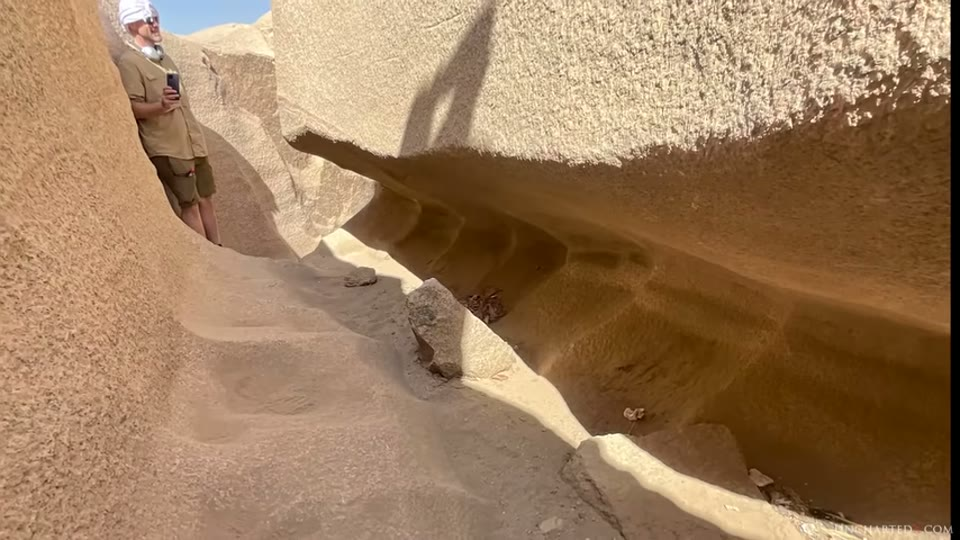
The scoops continue onto the underside of undercuts, where pounding would have to work upward against gravity.
What he offers instead, and how he qualifies it
Chris Dunn's test is the concrete part 44:54–46:56. Dunn gave a drawing to Don Reid, the tool room supervisor at Danville Metal Stamping, and had holes machined into aluminium with a ball end mill. The result reproduced vertical ridges and horizontal striations where the tool was withdrawn, rocked to clear waste, and reset — the two signatures the trench walls carry. What is shown on screen is a photograph of the printed page from Dunn's book, captioned Figure 9.19. Tool marks with periodic horizontal striations, rather than the block itself.

A rotating cutter in aluminium reproduces the vertical ridges and the horizontal striations, but not the bottom of the cut.
Ben then says plainly where it fails. The bottom of the aluminium block shows radial impressions from the rotating cutter, and those do not match the bottoms of the quarry trenches, so it was not a rotating ball end mill 46:49–47:18. He quotes Dunn agreeing, and Dunn's own proposal: something functioning "similar to a chainsaw, except much wider". Ben's reaction to Dunn's illustration of such a machine is that it "may have appeared vastly different to this", and that the point is the mechanism rather than the picture 47:37–47:55.
A second possibility he raises is ultrasonic machining, citing demonstrations by the jeweller Jeffrey Appling — brought to his attention by Colin Ross of the Brothers of the Serpent podcast — of small ultrasonic rigs drilling shaped tips into hard stone, and wondering whether such a thing could scale 48:14–48:47. He immediately notes the constraint: whatever it was needed a tool tip flexible enough to reach into undercuts, a point Dunn also makes 48:48–49:33.
Two observations he presents as his own and new:
- Angle changes. On some walls the scoops run straight down and then gradually swing to an angle. He reads this as the signature of an articulated arm working from a fixed pivot — dig straight out and the line is straight, move left or right of the pivot and the angle changes 49:56–50:43.
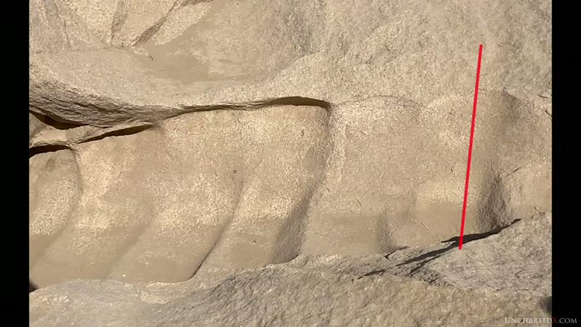
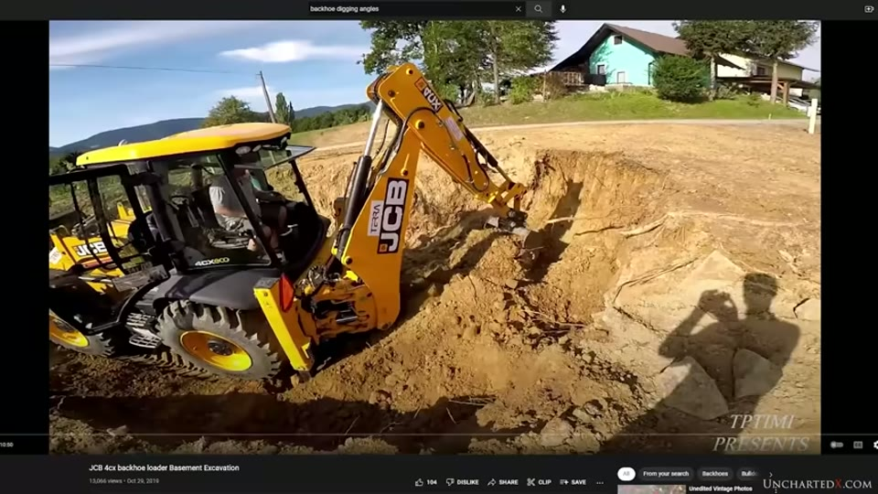
In places the scoops swing from vertical to an angle, which he reads as a tool on an articulated arm working from a fixed pivot.
- Scoop width, from LiDAR. Measuring across his scans, the scoops are not one width across the quarry, but within a given area they are consistent, which he reads as different tools in different places 50:54–51:21. The figures are on screen rather than only spoken: three adjacent scoops on one scanned wall are dimensioned at 0.489723 m, 0.494518 m and 0.488554 m — about 49 cm, agreeing to within 6 mm. He allows that some variation may come from the tool being withdrawn and levered, from overlapping cuts, and from thousands of years of weathering.
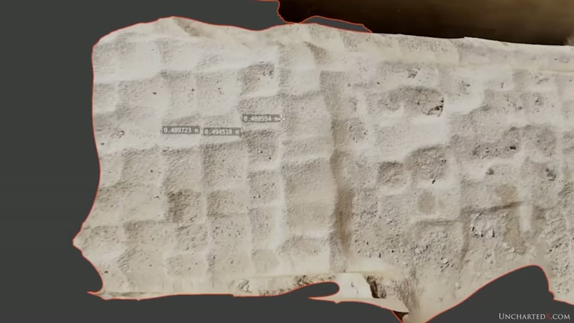
Scoop widths measured off the LiDAR scan agree closely within one area.
He is explicit that this whole section is speculation, and that the tool was not a precision instrument but something meant to remove material fast 51:37–51:44.
The same marks elsewhere
- Menkaure's granite casing blocks at Giza carry clear scoop marks. These blocks are dressed on the faces that meet their neighbours and left rough on the outside, as they came from the quarry 51:45–52:11. The identification is made on camera by the guide accompanying him, over a close shot of the blocks — "It's a tough tool, man. You see the scooping? Those are scooping marks. You can find it in the land of the Incas, you can find it in Sacsayhuamán, you can find it in the unfinished obelisk" 52:20–52:40.

The same signature appears on granite casing blocks at Giza that were left rough on the outer face.
- Sacsayhuamán, on the limestone of the zigzag wall; the granite of the Inca Roca walls in Cusco 52:41–53:09.
- Torontoy, near Machu Picchu, which he has not visited and reports from an image 53:10–53:20.
- Q'enqo and the Temple of the Moon 53:20–53:28. The on-screen caption reads "little qenko", which settles the spelling the audio mangles as "Kenko".
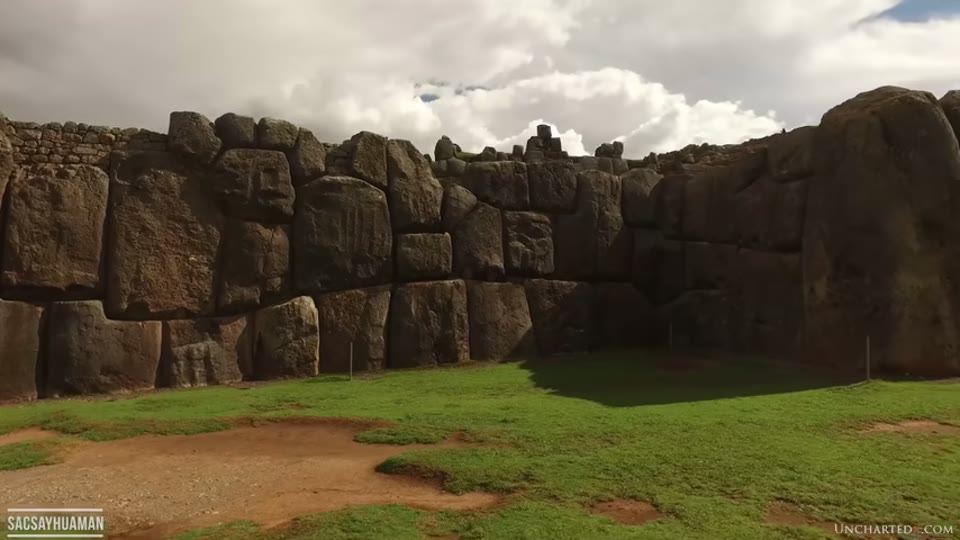
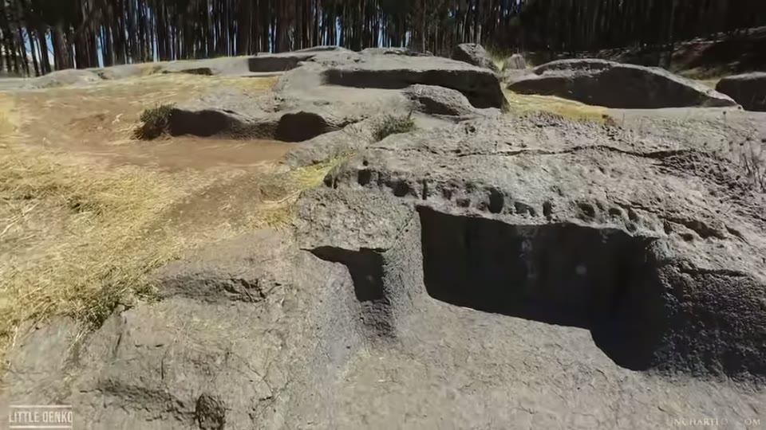
The claim that the same signature appears in Peru.
- Stonehenge bluestones — two stones, possibly three — reported to him by Hugh Newman of Megalithomania 53:39–54:31. The images shown are a screenshot of a Megalithomania tweet of 15 March 2022, and the tweet's own text is worth reading before the photographs are taken as evidence: "Are there scoop marks, carvings, striations, nubs, and other features at Stonehenge? Were the stones softened and manipulated? Traditions say that a tribe of giants may have been involved." It is a promotional post for a video, it asks its claim as a question, and the reason it offers is one Ben does not endorse anywhere else.

The Stonehenge comparison, and what it rests on.
Where he takes it
The closing position is the one he holds across the channel 54:32–56:30: that an advanced culture existed in the region, if not globally, long before the dynastic Egyptians, who he thinks were connected to it and spoke of it as Zep Tepi and the Shemsu Hor; that the Turin Papyrus records ancestors more than 35,000 years before the first dynasty; and that such a civilisation was lost to the cataclysm the Younger Dryas represents. He marks it as his view rather than as a finding of the video.
What you can check yourself
- Engelbach's books. The Aswan Obelisk (1922) and The Problem of the Obelisks (1923), and Ben points to archive.org for both 08:44–08:49. Every mainstream quotation in the video comes from them, including the two Ben leans on hardest — that Engelbach could not break a pounder by hand, and that he had not heard pounders proposed for trenching.
- The scoop geometry, on any photograph of the trench. Whether the scoops run in straight vertical lines, whether a ridge separates each one, whether horizontal striations cross them, and whether the bottoms of finished trenches are scooped or flat. This is the video's central claim and it is visible rather than calculated.
- The undercut ceilings. Whether the scoops carry on onto the underside of an overhang. It is a matter of looking up.
- The golf ball. It is right: a golf ball is about 40.7 cc, so three-quarters of one is about 30 cc, which is Stocks' hourly rate. The chicken egg in the same sentence is looser — 30 cc is nearer three-fifths of a large egg than the two-fifths stated.
- The display of intact pounders. Engelbach reported most of the ones he found were broken. What the quarry shows today is a curatorial choice a visitor can notice.
What the video does not settle
- The rates are Dunn's reconstruction, not the researchers' measurements. Ben says so — "there are assumptions made here, as all he had to go on was the reported results from each researcher, which weren't exactly weighed out with precision" — and then uses the numbers anyway. A figure quoted as 464.51 cubic centimetres per hour carries five significant figures derived from a man saying he lowered a patch by "about 5 mm".
- The three rates disagree fifteen-fold, and the image of the task is built on the lowest. 464.51, 74.32 and about 30 cubic centimetres an hour. The golf-ball picture uses Stocks' figure; Engelbach's, fifteen times larger, is the one produced by pounding the Aswan granite itself. What Ben draws from the spread is that the rate is poorly known and that Engelbach then assumed a rate 63% above his own result. No ground is given for treating any one of the three as the figure to reason from.
- The geometry argument is stated rather than tested. "Nothing requires the scoops to stay in one place" is a claim about how the work would proceed, and no attempt at pounding a trench is shown or cited in which the depressions were tracked to see whether they wander. What is on screen is the quarry walls; what a pounding crew's marks look like after a full trench is not.
- No mechanism is demonstrated. The chainsaw-like machine is Dunn's sketch, and its one physical test — the ball end mill in aluminium — reproduces two of the three signatures and fails on the third, which Ben reports honestly. The ultrasonic suggestion rests on small jewellery rigs with no scaled demonstration. Nothing here cuts granite.
- The LiDAR scans are not public, and the measurement shown is a single sample. Three dimensioned scoops appear on screen, agreeing to within 6 mm, which is a real figure and a tight one. What is not given is how many scoops were measured, in how many areas, what the widths are in the other areas he says differ, or how the measurement was taken on a weathered surface. The scans themselves go to channel members, patrons and SubscribeStar subscribers 59:16–59:28, so the sample cannot be extended by a reader. What is on screen is three measurements on one wall; what is stated is a pattern across the quarry.
- The angle change is shown but not quantified. A reference line is drawn on the frame and the swing is visible against it. There is no measurement of the angle, no count of occurrences beyond "a couple of spots", and no location given. The mechanism it is said to indicate is illustrated with stock footage of a JCB backhoe digging a basement rather than with anything from the quarry.
- Two of the worldwide comparisons are secondhand, and the images differ in kind. Torontoy is reported from a photograph he has not been to see. The Stonehenge material is a screenshot of a promotional tweet whose own wording poses the scoop marks as a question and attaches them to a tradition about giants. The Aswan, Menkaure, Sacsayhuamán and Q'enqo footage is his own; these two are not.
- The widest comparison shot does not show the marks. The Sacsayhuamán frame is a general view of the zigzag wall from across the field. The claim is about a surface texture, and at that distance the texture is not resolvable.
- Nothing dates anything. The video shows that several quarrying signatures exist at Aswan and infers multiple periods of work from that. Which signature is older is not addressed, and no dating evidence is offered for the scoop marks themselves, while the closing position is about a civilisation long before the dynastic Egyptians.
The same marks, a different mechanism
Two videos on another channel examine these scoop marks and reach the same negative conclusion by a different route, then part company over what did make them.
Scoop Marks in Egypt: A Groundbreaking New Hypothesis argues that the marks look like softened stone that has been shovelled out, that softening granite is physically impossible, and proposes instead flame-jet channelling — a documented industrial thermal method which works only on quartz-rich rock, which is what these marks appear on.
Aswan Quarry Scoop Marks: A Groundbreaking New Hypothesis takes two further proposals — water jets and a natron chemical method — and rules both out on specific physical grounds, before offering a modern plasma boring machine as the closest match available.
A later video returns to the same quarry from a fenced-off area beside the entrance and adds a dating argument to the method one: the Aswan harbour trench entry, where painted birds on the trench walls are read as pre-dynastic.
All three reject dolerite pounders. None of the three agrees on what did make the marks: a wide mechanical cutter or an ultrasonic tool here, a thermal process there. Neither presenter addresses the other's mechanism.
Names heard rather than confirmed
No caption track exists for this channel, so every name is a machine reconstruction — though this transcript is markedly cleaner than others on the channel, with punctuation and consistent spellings. Reginald Engelbach, Flinders Petrie, Mark Lehner, Roger Hopkins, Chris Dunn, Peter Tyson and Hugh Newman arrive intact and consistent. Corrected from context and flagged: Denys Stocks (spoken as "Dennis"), Gorringe (Egyptian Obelisks, 1882, rendered as "Göring"), Sacsayhuamán, Q'enqo, Ramesses III and Hori. Jeffrey Appling, Colin Ross and Don Reid are as heard and have not been verified. The quarry is repeatedly transcribed as "the S1 quarry" for the Aswan quarry.